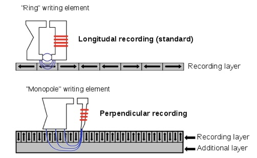
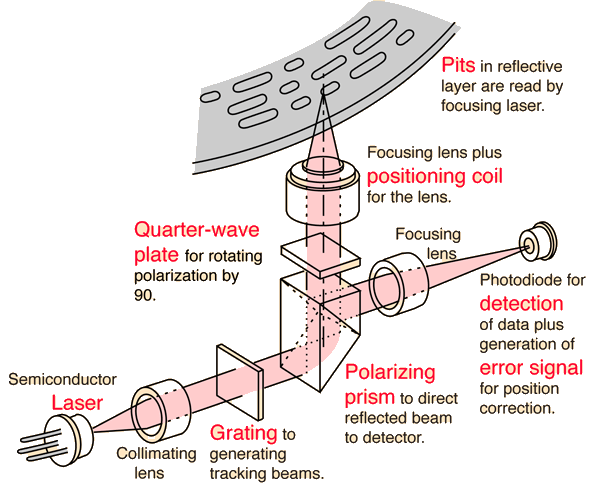
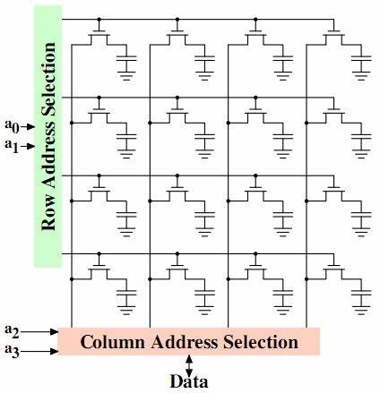
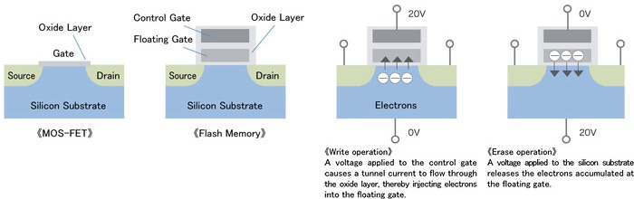

1-Bit 信息的存储
本讲阅读材料
教科书 (Operating Systems: Three Easy Pieces, OSTEP) 第 37, 44 章。
为了让计算机系统能够运行，程序、用户数据等都必须持久地存储下来，这就是 Three Easy Pieces 中的最后一部分: persistence。“持久化” 部分最早实现为 “文件系统”，以文件的形式统一地管理存储器上的数据；久而久之，随着 everything is a file, 文件系统的 API 也用来访问操作系统中的众多对象，因此 “持久化” 部分也揭开了操作系统中对象的迷你。
在理解操作系统如何管理持久化的存储介质之前，我们有必要首先了解一下数据是如何在物理世界中实现持久存储的。当我们说 “数据” 的时候，我们并不关心它的结构是什么——我们不妨就把数据看成是一个 (0/1 bit) 的数组。在这个 “数组” 的基础上，我们可以构造出各种各样的数据结构 (就像内存可以看作是一个数组，数据结构课程就是研究在内存这样一个随机访问的存储器上构造有各种特性的抽象数据类型)，更好地管理存储器——而这恰恰也就是持久化部分的重要内容。
1. 磁 (磁铁放置的方向)
为了存储 1-bit 的信息，我们需要一个能够被反复编辑为两种不同 “状态” 的物理介质。忽然我们想到了物理课上的那些内容：导体在磁场中切割磁感线运动，会产生感应电流；感应电流的方向与磁场方向相关 (楞次定律)。
没错，早在 1928 年，磁带被德国工程师 Fritz Pfleumer 发明出来。
1-bit = 磁铁放置的方向
把一块磁铁在两个相反的方向放置，并且使导体切割磁感线就能得到方向相反的电流——将这个微小的信号放大就能得到一个 0/1 bit 的信息。
“把磁铁朝着某个方向放置” 又恰好可以用电磁铁实现——在纸带上粘上铁磁体粉末，加以外磁场 (通过电磁铁产生方向可控的外磁场) 就能实现数据的写入。

磁带的好处是可以把密度做得相当大，而且成本很低——磁带很容易做到和读写装置 (磁带机) 分开，但缺点也很明显：无法进行高效的随机读写。
为了支持随机访问，我们可以把若干磁带并行，并且让磁带以固定的速度绕轴旋转。假设一分钟旋转 1200 次，那么读取任意数据的延迟都不会超过 50ms，这就是“磁鼓”。
为了获取更佳的访问性能和更大的容量，我们不难发现至少需要做到两点：
- 不能仅在一维的磁带上存储数据，而是应当将 bits 紧密地排布在一个二维平面上
- 需要能够高效地在二维平面上取出数据
于是一个巧妙的想法就显得十分自然了：我们把磁带和磁鼓拼起来就行了！
具体来说，我们只需要在二维平面上以同心圆的方式放置很多磁带，并且设计一个能够快速在一个方向上移动的机械臂，我们就可以在短时间内扫过二维平面上的任意一段连续的圆周区域了——
- 首先，操纵读写头到达指定的同心圆。这个操作称为 “寻道”，寻道时间一般在几 ms。
- 等待读写头到达需要读取的位置，例如对于 7200rpm 的磁盘，至多需要等 8.33 ms，然后读写头就可以像磁带一样读出/写入数据。
为了提高磁盘的容量和速度，我们可以在磁盘上放置多个盘片 (每个盘片两面都可以读写)，并为每个盘片设置一个读写头。关于磁盘的更详细介绍请阅读教科书。磁盘可以做到高速、大容量、价格便宜，因此一直以来都是计算机系统的主流存储。
磁盘存储器受到 Flash SSD 成本降低、速度增长的冲击，逐渐开始远离消费市场，今天我们买到的手机和笔记本电脑越来越多地使用固态存储。
2. 光 (挖坑/填坑)
如果我们想要做出高密度、只写一次、反复读取的设备，可以采用另一个方法——挖坑。与磁盘类似，我们可以把数据一圈一圈地排列在二维平面上，这样只需整个盘面绕中点旋转，和一个具有自由度的电机即可实现数据的定位。
1-bit = 挖坑/填坑
光盘有一个 “反射层”，能够反射光线，但被一层不反射光线的层覆盖。如果把这一层烧穿，就能在激光扫描过有坑/没有坑时读出不同的数据，因此一个坑就有了 1-bit 的数据。

光和磁盘一样需要机械部件定位和旋转。然而，硬盘盘片和读写头通常封装在真空中，可以达到较高的转速，但光盘与磁带类似，存储介质和读写头是分离式设计 (便于移动)，因此读写速度不如磁盘；而且因为“挖坑”是不可逆操作，光盘通常作为只读介质。
当然总有人想出各种各样的黑科技。如果把 “坑” 改成某一种材料， 它可以 (通过激光) 设置成两种不同的反射率，那就实现了可读写的 CD 了，这就是 CD-ReWritable (CD-RW)。通过 (某种 JYY 不知) 的 Phase-Change Material (PCM) 材料可以实现这一点。相比于硬盘，光盘因为读写部件 (光驱) 和盘片分离，因此单个盘片的成本可以更低 (工厂通过母片 + 压片的方式大批量生产)，所以非常适合作为数字媒体的发布介质 (无损音乐、电影、游戏……)。
当你感觉使用 AppStore 下载应用、Steam 下载游戏时，你已经意识到高速的互联网使 CD 低成本、可移动的优势变得微不足道。值得庆幸的是，每一个技术的淘汰都意味着更好的技术取而代之。
3. 电 (与非门)
我们真正的主角终于登场。磁盘和光盘终究无法摆脱旋转的机械装置——为了在二维平面上定位一个点，我们需要两个自由度，而目前人类能实现的便宜又高速的方法，就是旋转 + 有一个自由度的机械臂——即便在真空情况下，高速旋转部件的能耗、噪音、机械不稳定性都是磁盘的问题。
归根结底，为了实现快速地访问一个 bit，我们还是需要借助电信号。这时候你应该想起了 “数字逻辑电路” 中的内存 (SRAM/DRAM)——虽然它们是易失 (volatile，即断电后数据会丢失) 的，但它们的速度足够快：

我们只需要行/列选通的信号，就能以近似光速取出一个 DRAM cell 中的值——使用电信号才是计算机系统存储设备的应有解决方案。它没有任何机械装置、可以 3D 摆放、能够任意选通 (从而有超高的可扩展性)。
1-bit = NAND 门引脚上的信号
“与非门”
NAND(x, y) = !(x & y)如果我们能将一个与非门的输入进行编程，将其确定为 0/1，就能实现一个 bit 的存储。通过给半导体 floating gate 充电/放点，就能够实现这一点。

但为什么 Flash Memory 在很长一段时间 (甚至 U 盘都 “烂大街” 了) 都无法替代 HDD 呢？这是因为 NAND Flash 有一个很严重的缺陷——擦除的次数有数千到上万的上限。这是因为每次 erase 操作时都会进行一次放电，但放电无法放到 100% 干净，到一定寿命之后，就始终是充电的状态。一个数据块只能写几千到几万次，这听起来是难以接受的。这样如果我们反复写一个文件几万次 (文件系统的元数据写入甚至频繁得多)，磁盘不就损坏了么？几万次可不是个大数目，尤其是那些频繁的文件系统目录操作。不过我们买的消费级 SSD，即便我是重度磁盘使用者，也没听说过 “写坏” 呀。
你想的没错——硬件的缺陷，软件来补。SSD 的 FTL (flash translation layer) 被开发出来解决这个问题，它是一个完整的软件/硬件系统。虽然我们的优盘和 SSD 硬盘相貌差不多，但它们 FTL 的复杂程度也完全不同——SSD 的 FTL 就是一个小型计算机，运行操作系统和闪存管理程序。有兴趣的同学可以阅读教科书。SSD 的一个显著的好处就是容量越大，速度越快——借助先进的半导体工艺，闪存这种类似内存的结构不仅可以做得非常密集，而且可以做得非常并行。即便在今天的消费市场，你也会发现通常更大的 SSD 有更好的读/写性能。